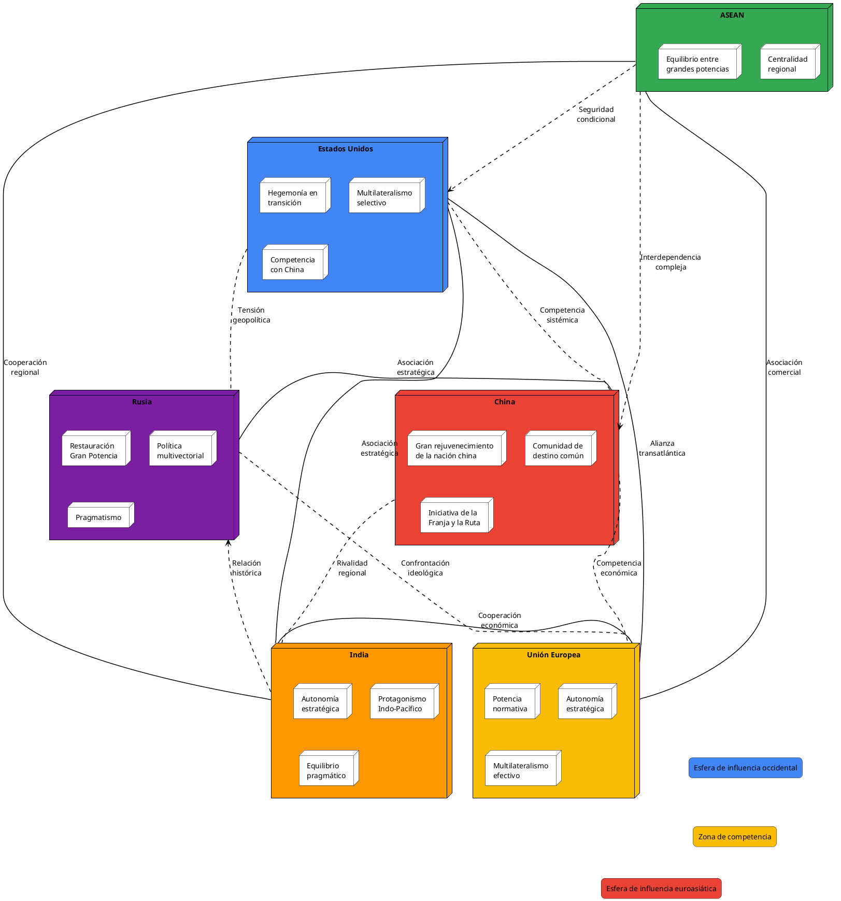
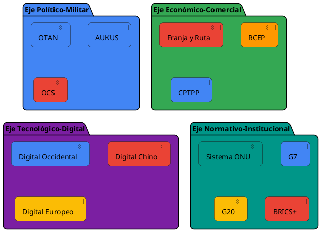
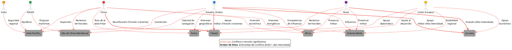

Visiones Geoestratégicas de los Grandes Bloques Mundiales y sus Líderes
Visiones Geoestratégicas de los Grandes Bloques Mundiales y sus Líderes
Introducción
En un mundo caracterizado por transformaciones aceleradas y reajustes de poder, comprender las visiones geoestratégicas de los grandes bloques mundiales y sus líderes resulta fundamental para anticipar la evolución del orden internacional. El presente análisis examina de manera exhaustiva cómo las principales potencias y bloques regionales conciben su papel en el tablero global, qué objetivos persiguen y qué estrategias implementan para alcanzarlos.
La geoestrategia, entendida como la aplicación de consideraciones geopolíticas a la formulación de grandes estrategias nacionales, constituye una herramienta esencial para interpretar el comportamiento de los actores internacionales. Más allá de las declaraciones oficiales y los discursos diplomáticos, las acciones concretas de los Estados revelan sus verdaderas prioridades y ambiciones.
Este análisis parte de la premisa de que nos encontramos en un período de transición sistémica, donde el orden internacional liberal establecido tras la Segunda Guerra Mundial y consolidado tras el fin de la Guerra Fría enfrenta desafíos significativos. La emergencia de nuevos centros de poder, particularmente en Asia, la erosión de instituciones multilaterales, la revolución tecnológica y la creciente competencia por recursos estratégicos configuran un escenario complejo y multidimensional.
A lo largo de este documento, examinaremos las visiones geoestratégicas de Estados Unidos, China, la Unión Europea, Rusia, India y la ASEAN, identificando patrones, convergencias y divergencias. Asimismo, analizaremos las principales tendencias que moldean el panorama geopolítico actual y sus posibles implicaciones para el futuro del sistema internacional.
Estados Unidos: Hegemonía en Transición
El "mito del retorno" y la restauración del liderazgo global
La política exterior de Estados Unidos bajo la administración Biden se ha caracterizado por un esfuerzo consciente por revertir lo que se percibe como un declive del poderío estadounidense, acelerado durante la presidencia de Donald Trump. Como señala Fundora Agrelo (2021), "los cambios actuales en las dinámicas del poder global están estrechamente vinculados al debilitamiento de EE.UU., proceso que se aceleró durante la presidencia de Donald Trump. Revertirlo se ha convertido en prioridad del posterior gobierno de Joseph Biden".
Este "mito del retorno" se materializa en una política exterior que busca contrarrestar el declive del poderío estadounidense a través de un enfoque que combina elementos de continuidad y ruptura con la administración anterior. Por un lado, mantiene la identificación de China como el principal desafío estratégico; por otro, se distancia del unilateralismo trumpista para abrazar un renovado multilateralismo selectivo.
La política exterior para la "clase media estadounidense"
Un elemento distintivo de la visión geoestratégica de la administración Biden es la articulación de una "política exterior para la clase media estadounidense". Este concepto, desarrollado por un grupo de trabajo de la Carnegie Endowment for International Peace, busca vincular explícitamente los objetivos de política exterior con la prosperidad económica interna.
Según esta visión, la política exterior debe contribuir a la expansión de la clase media, la generación de consenso y un mayor involucramiento de los ciudadanos en torno a las principales acciones internacionales. Este enfoque responde a la erosión del consenso doméstico resultante del fracaso de la guerra contra el terrorismo y profundizada durante el gobierno de Trump.
La competencia estratégica con China
El Secretario de Estado Antony Blinken definió la relación de EE.UU. con China como "el mayor reto geopolítico del siglo XXI". Esta caracterización refleja el reconocimiento de que China es "el único país con el poder económico, diplomático, militar y tecnológico para desafiar seriamente el sistema internacional estable y abierto" (Blinken, 2021).
La estrategia estadounidense hacia China se articula en términos de competencia estratégica, en la que EE.UU. debe involucrarse desde una posición de fuerza, la que a su vez dependerá de la cohesión que logre con sus aliados. Blinken resumió los nexos bilaterales de la siguiente manera: "Nuestra relación con China será competitiva cuando deba ser, colaborativa cuando pueda ser, y de confrontación cuando tenga que ser" (Blinken, 2021).
El retorno al multilateralismo y la revitalización de alianzas
A diferencia de la administración Trump, caracterizada por el lema "America First" y un enfoque transaccional de las relaciones internacionales, la administración Biden ha priorizado la revitalización de alianzas tradicionales y el fortalecimiento de instituciones multilaterales.
Este giro responde al reconocimiento de que Estados Unidos no puede enfrentar los desafíos globales en solitario y que su influencia depende, en gran medida, de su capacidad para movilizar coaliciones de países afines. Como señala Fundora Agrelo (2021), "la evidente contraposición entre el fomento de alianzas y el America First de Trump es un reconocimiento de la incapacidad de EE.UU. de promover y proteger sus intereses en condiciones de aislacionismo".
La democracia como pilar diferenciador
Un elemento central de la visión geoestratégica estadounidense es la promoción de la democracia como valor fundamental y como factor diferenciador frente a regímenes autoritarios. Al oponer las "democracias" a las "autocracias", EE.UU. busca apuntalar la unidad con sus aliados en función de la otredad y legitimar la necesidad de un liderazgo organizado desde Washington.
Sin embargo, esta narrativa enfrenta desafíos significativos, tanto por las contradicciones internas de la democracia estadounidense (evidenciadas en episodios como la insurrección del Capitolio) como por la creciente asertividad de modelos alternativos de gobernanza, particularmente el promovido por China.
China: Ascenso Sistemático y Visión a Largo Plazo
El "gran rejuvenecimiento de la nación china"
La política exterior de China bajo el liderazgo de Xi Jinping se articula en torno al concepto del "gran rejuvenecimiento de la nación china", que constituye uno de los tres elementos fundamentales de su doctrina. Este concepto encapsula la ambición de restaurar a China a su posición histórica como potencia global para el centenario de la fundación de la República Popular China en 2049.
Como señalan Nathan y Zhang (2022), este pensamiento "puede ser entendido también como una nueva versión de sinocentrismo, uno diseñado para el siglo XXI". La visión de Xi Jinping trasciende los objetivos inmediatos de política exterior para insertarse en una narrativa histórica de restauración del prestigio y la influencia de China en el sistema internacional.
Evolución de la política exterior china: de Deng Xiaoping a Xi Jinping
La política exterior china ha experimentado una transformación gradual desde las primeras fases del programa de modernización económica. Durante el liderazgo de Deng Xiaoping, China adoptó una doctrina de 24 caracteres que proponía una política exterior de bajo perfil, instruyendo a los líderes a que China "nunca aspirara al liderazgo" (Keith, 2017).
Esta situación ha cambiado notablemente con la llegada de Xi Jinping al poder. A partir de 2012, la política exterior china ha dado un giro importante (Poh y Li, 2017), mostrándose más confidente, alcanzando mayor protagonismo, desafiando a ciertas instituciones internacionales y fundando otras, consolidando nuevas alianzas, proponiendo nuevos modelos de gobernanza mundial e impulsando nuevas formas de cooperación internacional para el desarrollo.
La "comunidad de destino común de la humanidad"
El segundo elemento constitutivo de la doctrina de Xi es la "comunidad de destino común de la humanidad", un concepto que propone un nuevo modelo de relaciones internacionales basado en la cooperación mutuamente beneficiosa y el respeto a la diversidad de sistemas políticos y trayectorias de desarrollo.
Este concepto representa un desafío directo al orden liberal internacional liderado por Occidente, ofreciendo una alternativa que enfatiza la soberanía estatal, la no injerencia en asuntos internos y el desarrollo económico por encima de consideraciones políticas o de derechos humanos.
La Iniciativa de la Franja y la Ruta
La Iniciativa de la Franja y la Ruta (BRI, por sus siglas en inglés) constituye la manifestación más visible de la ambición global de China. Lanzada en 2013, esta iniciativa de infraestructura y conectividad abarca más de 140 países y representa una inversión estimada de más de un billón de dólares.
Más allá de sus objetivos económicos declarados, la BRI tiene implicaciones geopolíticas significativas, permitiendo a China expandir su influencia en regiones estratégicas, asegurar rutas comerciales y recursos naturales, y crear dependencias económicas que pueden traducirse en influencia política.
Política exterior como fuente de legitimidad interna
Un aspecto fundamental para comprender la política exterior china es su vinculación con la legitimidad del Partido Comunista. Como señala Lemus-Delgado (2022), "más allá de implementar una política exterior que responda a los desafíos coyunturales del momento, defienda los principios innegociables como la cuestión de una sola China y la eventual reunificación de Taiwán, restaure el prestigio internacional y permita consolidarse como un actor relevante en los asuntos internacionales, la política exterior, en el fondo, tiene sentido en la medida en que favorece la legitimidad política del Partido Comunista".
La política exterior debe contribuir a mostrar al mundo y a los propios ciudadanos chinos que la fórmula de un socialismo con características propias es el mejor camino para la humanidad. Esta dimensión interna de la política exterior china es crucial para entender sus motivaciones y limitaciones.
Unión Europea: Potencia Normativa en Búsqueda de Autonomía Estratégica
Entre la potencia normativa y la geopolítica
La Unión Europea ha sido tradicionalmente caracterizada como una "potencia normativa", cuya influencia deriva principalmente de su capacidad para establecer normas y estándares que otros actores adoptan voluntariamente. Sin embargo, en un contexto internacional crecientemente competitivo y conflictivo, la UE se enfrenta al desafío de desarrollar una dimensión más geopolítica de su acción exterior.
Como se refleja en la "Brújula Estratégica para la Seguridad y la Defensa", refrendada por el Consejo Europeo en marzo de 2022, la UE aspira a convertirse en un actor que "proteja a sus ciudadanos, defienda sus valores e intereses y contribuya a la paz y la seguridad internacionales".
La búsqueda de la autonomía estratégica
El concepto de "autonomía estratégica" ha emergido como un pilar central de la visión geoestratégica europea. Aunque inicialmente surgió en el ámbito de la defensa, se ha expandido para abarcar dimensiones económicas, tecnológicas y energéticas.
La autonomía estratégica implica la capacidad de la UE para actuar independientemente cuando sea necesario y con socios cuando sea posible. Este enfoque responde a la creciente percepción de vulnerabilidad ante la competencia entre grandes potencias, particularmente entre Estados Unidos y China, y la necesidad de proteger los intereses europeos en un entorno internacional más hostil.
Multilateralismo efectivo y defensa del orden basado en reglas
A pesar de su creciente enfoque en la autonomía, la UE mantiene un fuerte compromiso con el multilateralismo y la defensa del orden internacional basado en reglas. La política exterior y de seguridad común de la UE, como se establece en los documentos oficiales, se basa en la diplomacia y el respeto de las normas internacionales, con el objetivo de mantener la paz, reforzar la seguridad internacional, fomentar la cooperación internacional, y desarrollar y consolidar la democracia y el Estado de Derecho.
Este compromiso con el multilateralismo refleja tanto los valores fundacionales de la UE como un cálculo estratégico: para una entidad que no es un Estado tradicional y que carece de las capacidades de poder duro de otras grandes potencias, un sistema internacional regulado ofrece mayores garantías de seguridad y prosperidad.
Fragmentación interna y desafíos de coherencia
Un desafío persistente para la proyección geopolítica de la UE es la fragmentación interna y la dificultad para articular posiciones comunes en temas sensibles de política exterior. La necesidad de consenso en muchas decisiones de política exterior y de seguridad a menudo resulta en posiciones de mínimo común denominador o en parálisis decisoria.
Esta fragmentación se manifiesta particularmente en las relaciones con actores clave como China, Rusia y Estados Unidos, donde los intereses nacionales divergentes de los Estados miembros dificultan la formulación de estrategias coherentes y efectivas a nivel europeo.
La dimensión de seguridad y defensa
Tradicionalmente considerada como un "gigante económico pero un enano político", la UE ha intensificado sus esfuerzos para desarrollar capacidades autónomas en el ámbito de la seguridad y la defensa. Iniciativas como la Cooperación Estructurada Permanente (PESCO), el Fondo Europeo de Defensa y la Capacidad Militar de Planificación y Ejecución reflejan esta ambición.
Sin embargo, la UE enfrenta limitaciones significativas en este ámbito, incluyendo la fragmentación de los mercados de defensa nacionales, la duplicación de capacidades, la falta de interoperabilidad y la persistente dependencia de la OTAN (y, por extensión, de Estados Unidos) para la defensa colectiva.
Rusia: Restauración del Estatus de Gran Potencia
El "Derzhavnost" y el retorno a la "Gran Rusia"
La visión geoestratégica de Rusia bajo el liderazgo de Vladimir Putin está fundamentalmente orientada hacia la recuperación del estatus de gran potencia, lo que en la tradición rusa se conoce como "Derzhavnost" o el sueño de la "Gran Rusia". Como señala Voico (2010), Putin llegó al poder con el objetivo claro de "retomar su lugar en el continente y transformar a Rusia en un Estado moderno y fuerte".
Este "mito del retorno" ha guiado la política exterior rusa desde el año 2000, cuando Putin asumió la presidencia en un contexto de profunda crisis tras el colapso de la Unión Soviética y la turbulenta década de 1990 bajo Boris Yeltsin.
Política multivectorial y pragmatismo
La estrategia implementada por Putin para alcanzar el objetivo de reposicionamiento internacional se ha caracterizado como "multivectorial", apuntando a diversos frentes simultáneamente. Según Sacchetti (2008), los objetivos estratégicos de esta política incluyen: 1) restaurar el poder de Rusia en la exesfera soviética; 2) establecer y estabilizar un sistema internacional multipolar, promoviendo la cooperación con China e India; 3) mantener relaciones amistosas con Occidente; y 4) asociarse con la Unión Europea.
El pragmatismo se ha convertido en un principio rector de la política exterior rusa, como el propio Putin afirmó en un discurso en 2001. Este enfoque no ideológico ha permitido a Rusia adaptarse a circunstancias cambiantes y perseguir sus intereses nacionales de manera flexible, convirtiendo al país en "uno de los menos ideológicos del mundo" (Trenin, 2007).
Fortalecimiento de capacidades de poder duro
Un elemento central de la estrategia de Putin ha sido el fortalecimiento de las capacidades de poder duro de Rusia, tanto en el ámbito económico como militar. Partiendo de la premisa neorrealista de que las capacidades materiales determinan la posición de un Estado en la estructura internacional, Putin ha implementado reformas significativas para revertir el deterioro experimentado durante la década de 1990.
En el ámbito económico, estas reformas han incluido la consolidación fiscal, una cuidadosa política monetaria y, significativamente, la recuperación del control estatal sobre sectores estratégicos, particularmente el energético. En el ámbito militar, Rusia ha llevado a cabo una ambiciosa modernización de sus fuerzas armadas, incrementando sustancialmente el gasto en defensa y desarrollando capacidades avanzadas en áreas como misiles hipersónicos, guerra electrónica y operaciones híbridas.
Evolución de la política exterior rusa: tres fases
La política exterior de Rusia bajo Putin ha evolucionado a través de tres fases distintas. La primera, entre 2000 y 2007, se caracterizó por el pragmatismo y una relativa cercanía con Occidente, incluyendo la cooperación en la "guerra contra el terrorismo" tras los ataques del 11 de septiembre.
La segunda fase, iniciada con el discurso de Putin en la Conferencia de Seguridad de Munich en 2007, marcó un punto de inflexión hacia una política exterior más asertiva y, en ocasiones, confrontacional. Esta fase culminó con la crisis de Ucrania en 2013-2014 y la anexión de Crimea.
La tercera fase, desde 2014 hasta la actualidad, ha estado marcada por la consolidación de la nueva posición de Rusia en la estructura regional y global de poder, caracterizada por una creciente confrontación con Occidente, el fortalecimiento de la alianza estratégica con China y la expansión de la influencia rusa en regiones como Oriente Medio, África y América Latina.
La esfera de influencia post-soviética
Un elemento constante en la visión geoestratégica rusa ha sido la prioridad otorgada a lo que Moscú considera su "extranjero cercano", es decir, los países que formaron parte de la Unión Soviética. Rusia percibe esta región como su esfera de influencia natural y ha utilizado diversos instrumentos, desde la integración económica (Unión Económica Euroasiática) hasta la intervención militar (Georgia 2008, Ucrania 2014 y 2022), para mantener su predominio.
Esta política refleja tanto consideraciones de seguridad (crear un "cinturón de seguridad" alrededor de Rusia) como ambiciones geopolíticas más amplias, vinculadas a la recuperación del estatus de gran potencia y al establecimiento de un orden internacional multipolar.
India: Autonomía Estratégica y Protagonismo Regional
La autonomía estratégica como pilar fundamental
La política exterior de India bajo el gobierno de Narendra Modi se fundamenta en el principio de autonomía estratégica, entendida como la capacidad para tomar decisiones independientes en materia política y económica, evitando alineaciones estrictas con grandes potencias. Como señala un análisis de Geopol 21 (2024), "la política exterior del gobierno Modi se basa en el pilar de la autonomía estratégica como fundamento de una estrategia apta a mejor proteger el interés nacional".
Este principio, que tiene raíces profundas en la tradición diplomática india desde la independencia y el movimiento de países no alineados, ha adquirido nuevos matices en el contexto actual de competencia entre Estados Unidos y China, permitiendo a India mantener relaciones pragmáticas con ambas potencias según sus intereses nacionales.
El protagonismo en el Indo-Pacífico
El escenario donde se manifiesta de manera más evidente el nuevo protagonismo de India a nivel internacional es la región del Indo-Pacífico. Esta región, que ha adquirido centralidad en la geopolítica global debido a su dinamismo económico y a la competencia estratégica entre Estados Unidos y China, representa para India tanto una oportunidad como un desafío.
Por un lado, India busca posicionarse como un contrapeso regional a la creciente influencia china, participando en iniciativas como el Diálogo de Seguridad Cuadrilateral (Quad) junto con Estados Unidos, Japón y Australia. Por otro lado, mantiene su autonomía estratégica, evitando que estas asociaciones se conviertan en alianzas formales que podrían limitar su margen de maniobra.
Multilateralismo selectivo y equilibrio pragmático
India ha adoptado un enfoque de multilateralismo selectivo, participando activamente en organizaciones globales como la ONU y el G20, pero manteniendo siempre un margen de maniobra que le permita defender sus intereses nacionales. Este enfoque se complementa con un equilibrio pragmático en sus relaciones con las grandes potencias.
La capacidad de India para mantener simultáneamente relaciones estratégicas con Estados Unidos, vínculos históricos con Rusia (particularmente en el ámbito de la defensa) y una compleja interacción con China (combinando competencia y cooperación) ejemplifica esta estrategia de equilibrio pragmático, que algunos analistas han caracterizado como "socio de todos, aliado de nadie".
Seguridad regional y gestión de relaciones complejas
Un aspecto fundamental de la política exterior india es la gestión de su entorno regional inmediato, particularmente las relaciones con Pakistán y China, con quienes mantiene disputas territoriales históricas. La seguridad regional constituye una prioridad para India, que trabaja para asegurar la estabilidad en el sur de Asia mientras desarrolla capacidades militares disuasorias.
Esta dimensión de seguridad se complementa con iniciativas de cooperación regional, como la Asociación Sudasiática para la Cooperación Regional (SAARC) y la Iniciativa de la Bahía de Bengala para la Cooperación Multisectorial Técnica y Económica (BIMSTEC), aunque estas organizaciones enfrentan limitaciones significativas debido a las tensiones entre sus miembros.
La dimensión económica y tecnológica
La política exterior de India está cada vez más vinculada a sus objetivos de desarrollo económico y tecnológico. La visión de "Viksit Bharat" (India Desarrollada) para 2047, coincidiendo con el centenario de la independencia, establece ambiciosas metas que requieren una inserción favorable en la economía global y el acceso a tecnologías avanzadas.
En este contexto, India busca posicionarse como un hub de manufactura global (Make in India), un líder en tecnologías digitales y un actor relevante en la transición energética, objetivos que influyen significativamente en sus relaciones exteriores y alianzas estratégicas.
ASEAN: Centralidad y Equilibrio entre Grandes Potencias
Orígenes y evolución de ASEAN
La Asociación de Naciones del Sudeste Asiático (ASEAN) nació con la intención de agrupar a potencias medias pro-occidentales en el contexto de la Guerra de Vietnam, con el objetivo de atraer y mantener el interés de Estados Unidos en la región, evitar la expansión del comunismo y promover un entorno de desarrollo económico y paz.
Como señala Emilio de Miguel (2025), tras el fin de la Guerra de Vietnam y la disminución del interés estadounidense en la región, los estados miembros de ASEAN firmaron en febrero de 1976 el Tratado de Amistad y Cooperación (TAC), que busca "promover la paz, estabilidad y cooperación en la región", fomentando la resolución pacífica de conflictos y la prevención de futuros enfrentamientos.
La centralidad de ASEAN en la arquitectura regional
Un concepto clave en la visión geoestratégica de ASEAN es el de "centralidad", entendido como el posicionamiento de la organización como núcleo de la arquitectura regional del Indo-Pacífico. Esta centralidad se manifiesta en la creación y liderazgo de diversos foros multilaterales, como la Cumbre de Asia Oriental, el Foro Regional de ASEAN y la Reunión Ampliada de Ministros de Defensa.
La centralidad de ASEAN le permite ejercer una influencia superior a la que sus miembros individuales podrían alcanzar por separado, facilitando la gestión de relaciones con grandes potencias y la promoción de normas regionales basadas en el consenso y la no confrontación.
Navegando entre grandes potencias
Un rasgo distintivo de la política exterior de los países de ASEAN es la necesidad de navegar entre la rivalidad de China y Estados Unidos sin verse forzados a elegir. Como señala de Miguel (2025), "ASEAN es la asociación más cercana a la Unión Europea y está atravesando un momento geopolítico similar al de Europa".
Esta estrategia de equilibrio refleja tanto la vulnerabilidad de estos países ante presiones externas como su determinación de mantener la autonomía regional y evitar la polarización que podría socavar décadas de integración y cooperación.
Desafíos de cohesión interna
A finales de los 90, ASEAN amplió su membresía con la incorporación de Laos, Camboya, Myanmar y Vietnam. Como señala de Miguel, "lo que ganaron en extensión, lo perdieron en cohesión". Estos problemas de cohesión no fueron inmediatos, pero surgieron debido a las grandes disparidades económicas entre los países miembros, con una diferencia de 326 veces entre el menos desarrollado, Laos, y el más rico, Singapur.
Esta falta de cohesión interna se ha manifestado en la gestión de crisis regionales, como el caso de Myanmar tras el golpe militar de 2021 o las disputas en el Mar de China Meridional, donde los intereses divergentes de los miembros han dificultado la articulación de posiciones comunes efectivas.
Visión 2045 y perspectivas futuras
En mayo de 2025, se celebrará en Kuala Lumpur la Cumbre ASEAN, que presentará la denominada "Visión 2045", estableciendo los objetivos para los próximos veinte años. Según de Miguel (2025), algunos de los aspectos que podrían abordar esta visión incluyen: el refuerzo de la Secretaría General, la creación de mecanismos para la gestión de conflictos y controversias, la redefinición del principio de no injerencia, la promoción de la participación de la sociedad civil y una mayor cohesión en su actuación en foros internacionales.
Esta visión refleja la ambición de ASEAN de adaptarse a un entorno geopolítico cambiante mientras preserva su autonomía y centralidad en la arquitectura regional.
Convergencias y Divergencias entre Bloques Geoestratégicos
Convergencias emergentes
A pesar de las profundas diferencias entre los grandes bloques mundiales, es posible identificar algunas convergencias significativas en sus visiones geoestratégicas:
- Reconocimiento de la multipolaridad: Existe un consenso creciente sobre la naturaleza multipolar del orden internacional emergente, aunque con interpretaciones divergentes sobre sus implicaciones.
- Competencia tecnológica: Todos los actores principales reconocen la centralidad de la tecnología como vector de poder geopolítico, particularmente en áreas como inteligencia artificial, computación cuántica y biotecnología.
- Seguridad económica: La pandemia de COVID-19 y las tensiones geopolíticas han elevado la importancia de la seguridad económica, incluyendo la resiliencia de cadenas de suministro y la reducción de dependencias críticas.
- Regionalización: Se observa una tendencia hacia la formación de bloques regionales más cohesionados y cadenas de valor más localizadas, en respuesta a la incertidumbre global.
- Desafíos transnacionales: Existe un reconocimiento compartido, aunque con diferentes grados de compromiso, sobre la necesidad de abordar amenazas comunes como el cambio climático, el terrorismo y las pandemias.
Divergencias fundamentales
Las divergencias entre los grandes bloques mundiales son profundas y estructurales, reflejando diferentes concepciones del orden internacional y de los principios que deben regirlo:
- Valores fundamentales: La confrontación entre modelos democráticos y autoritarios constituye una línea divisoria fundamental, con implicaciones para la legitimidad de diferentes sistemas políticos y económicos.
- Interpretación del derecho internacional: Los actores aplican selectivamente el derecho internacional según sus intereses, con diferencias significativas en la interpretación de principios como la soberanía, la no injerencia y la responsabilidad de proteger.
- Visión del orden global: Mientras potencias establecidas como Estados Unidos y la Unión Europea defienden en gran medida el statu quo (con reformas incrementales), potencias emergentes como China y Rusia abogan por una transformación más profunda del sistema internacional.
- Soberanía vs. intervención: Existen diferentes umbrales para la injerencia en asuntos internos, con China y Rusia enfatizando la soberanía absoluta, mientras Occidente promueve conceptos como la responsabilidad de proteger.
- Alianzas estratégicas: La formación de bloques con visiones contrapuestas sobre seguridad colectiva, como la OTAN y la Organización de Cooperación de Shanghai, refleja estas divergencias fundamentales.

Tendencias Emergentes en el Panorama Geopolítico Global
Desglobalización selectiva y regionalización
Una de las tendencias más significativas en el panorama geopolítico actual es lo que podríamos denominar "desglobalización selectiva". A diferencia de la globalización acelerada de las décadas anteriores, caracterizada por la integración profunda de mercados y cadenas de valor globales, asistimos a una reevaluación estratégica de interdependencias económicas.
Esta tendencia se manifiesta en la relocalización (reshoring) o regionalización (nearshoring) de cadenas de suministro críticas, la implementación de políticas industriales nacionales más asertivas y la formación de bloques comerciales regionales con mayor cohesión interna. Como señaló el viceprimer ministro chino Ding Xuexiang en el Foro de Davos 2025, "es cierto que la globalización económica genera algunas tensiones y desacuerdos en la distribución", aunque advirtió que "el proteccionismo no lleva a ninguna parte. Las guerras comerciales no tienen ganadores".
Competencia por recursos críticos y tecnologías emergentes
La competencia por recursos críticos, particularmente aquellos esenciales para la transición energética y las tecnologías avanzadas, se ha intensificado significativamente. Minerales como el litio, cobalto, tierras raras y semiconductores se han convertido en activos estratégicos, objeto de políticas nacionales de seguridad económica.
Paralelamente, la carrera por el liderazgo en tecnologías emergentes como la inteligencia artificial, la computación cuántica y la biotecnología ha adquirido dimensiones geopolíticas, con implicaciones profundas para el equilibrio de poder global. Como señala Haiyong (2019), la competencia entre Estados Unidos y China por "obtener ventajas definitivas en la carrera por la supremacía tecnológica" constituye uno de los ejes centrales de la rivalidad entre ambas potencias.

Militarización de nuevos dominios: espacio y ciberespacio
El espacio y el ciberespacio se han convertido en nuevos dominios de competencia estratégica, con implicaciones significativas para la seguridad nacional e internacional. La militarización del espacio, manifestada en el desarrollo de capacidades antisatélite, sistemas de vigilancia espacial y la creación de ramas espaciales en las fuerzas armadas de varias potencias, refleja la creciente importancia de este dominio.
Paralelamente, el ciberespacio ha emergido como un campo de batalla donde se desarrollan operaciones ofensivas y defensivas, desde el espionaje y el sabotaje hasta la desinformación y la interferencia electoral. La Decisión (PESC) 2019/797 del Consejo de la UE, relativa a medidas restrictivas contra los ciberataques, y la Estrategia de Ciberseguridad de la UE para la Década Digital reflejan la creciente preocupación por estas amenazas.
Diplomacia climática y geopolítica de la transición energética
El cambio climático y la transición energética han adquirido una dimensión geopolítica significativa, con implicaciones para las relaciones de poder, la seguridad y la competitividad económica. La diplomacia climática se ha convertido en un vector de influencia internacional, como se evidenció en la Cumbre de Líderes sobre el Clima mencionada en el análisis de la política exterior estadounidense.
La transición hacia energías renovables está reconfigurando las relaciones de poder basadas en recursos fósiles, creando nuevas dependencias en torno a minerales críticos y tecnologías limpias. Esta transformación tiene implicaciones profundas para países productores de petróleo y gas, así como para aquellos que lideran la innovación en energías renovables.
Fragmentación tecnológica y "desacoplamiento"
La creciente rivalidad tecnológica entre Estados Unidos y China está conduciendo a una fragmentación del ecosistema tecnológico global, con la emergencia de estándares, plataformas y cadenas de suministro paralelas y potencialmente incompatibles. Este "desacoplamiento" tecnológico tiene implicaciones significativas para la innovación, la seguridad y la gobernanza digital.
La Estrategia Europea de Seguridad Económica y la Recomendación de la Comisión sobre ámbitos tecnológicos críticos reflejan la preocupación europea por estas tendencias y la búsqueda de una "tercera vía" que preserve la autonomía tecnológica sin caer en un aislamiento contraproducente.

{kind=link}
Conclusiones: Un Sistema Internacional en Transición
El análisis comparativo de las visiones geoestratégicas de los grandes bloques mundiales revela un sistema internacional en profunda transición, caracterizado por dinámicas complejas y, en ocasiones, contradictorias.
Competencia sistémica entre modelos alternativos
Más allá de conflictos puntuales o disputas territoriales, asistimos a una competencia sistémica entre modelos políticos y económicos alternativos. El modelo democrático liberal, liderado por Estados Unidos y la Unión Europea, enfrenta el desafío de modelos autoritarios con creciente asertividad, particularmente el "socialismo con características chinas" promovido por Beijing.
Esta competencia trasciende el ámbito militar o económico para abarcar dimensiones normativas, tecnológicas y de gobernanza global. Como señala Goldstein (2020), nos encontramos posiblemente "en la antesala de una época que recuerda a los tiempos de la Guerra Fría", aunque con características distintivas propias del siglo XXI.
Reconfiguración de alianzas y asociaciones estratégicas
El panorama de alianzas y asociaciones estratégicas está experimentando una reconfiguración significativa, con la emergencia de alineamientos más fluidos y pragmáticos. A diferencia de la bipolaridad rígida de la Guerra Fría, el sistema actual permite a actores como India o ASEAN mantener relaciones simultáneas con potencias rivales, maximizando su autonomía estratégica.
Esta fluidez refleja tanto la multipolaridad emergente como la creciente interconexión económica, que dificulta alineamientos exclusivos. Sin embargo, en ámbitos críticos como la seguridad o la tecnología, se observa una tendencia hacia la formación de bloques más definidos, como evidencian iniciativas como AUKUS o la Organización de Cooperación de Shanghai.
Erosión de instituciones multilaterales tradicionales
Las instituciones multilaterales establecidas tras la Segunda Guerra Mundial enfrentan desafíos significativos a su legitimidad, representatividad y eficacia. La parálisis del Consejo de Seguridad de la ONU, las dificultades de la Organización Mundial del Comercio y la crisis de la arquitectura de control de armamentos reflejan esta erosión del multilateralismo tradicional.
Paralelamente, emergen foros e iniciativas alternativas, desde el BRICS+ hasta la Iniciativa de la Franja y la Ruta, que reflejan las ambiciones de potencias emergentes por reformar o reemplazar aspectos del orden internacional establecido. La admisión de la Unión Africana como miembro permanente del G20 en 2023 y su impulso para conseguir un puesto permanente en el Consejo de Seguridad de la ONU, con el reciente respaldo de EE.UU., ilustran esta dinámica de reforma incremental.
Regionalización de la seguridad y protagonismo de potencias medias
Ante la incertidumbre global y las limitaciones del sistema de seguridad colectiva, se observa una tendencia hacia la regionalización de los arreglos de seguridad, con potencias medias asumiendo mayor protagonismo en sus respectivas regiones. India en el sur de Asia, Brasil en Sudamérica o Turquía en el Mediterráneo oriental ejemplifican esta tendencia.
Esta regionalización puede contribuir a la estabilidad al permitir soluciones adaptadas a contextos específicos, pero también entraña riesgos de fragmentación y competencia entre bloques regionales. La capacidad de las organizaciones regionales para gestionar conflictos y promover la cooperación será determinante para la evolución del orden internacional.
Interconexión entre política interna y externa
Un factor determinante en la formulación de estrategias geopolíticas es la creciente interconexión entre política interna y externa. Desde la "política exterior para la clase media estadounidense" hasta la vinculación entre política exterior china y legitimidad del Partido Comunista, los líderes deben equilibrar consideraciones domésticas e internacionales de manera cada vez más explícita.
Esta interconexión puede limitar el margen de maniobra diplomático, pero también puede generar estrategias más sostenibles al alinear objetivos internos y externos. La capacidad de los líderes para articular narrativas coherentes que vinculen ambas dimensiones será crucial para la efectividad de sus visiones geoestratégicas.
En definitiva, el panorama geopolítico actual se caracteriza por su complejidad, fluidez y multidimensionalidad. Ningún actor, por poderoso que sea, puede imponer unilateralmente su visión del orden internacional, y la gestión de interdependencias complejas se convierte en un imperativo estratégico para todos los bloques. En este contexto, la capacidad para combinar competencia y cooperación, firmeza y flexibilidad, valores e intereses, determinará en gran medida la evolución del sistema internacional en las próximas décadas.
Referencias
- Blinken, A. (2021a). Discurso sobre política exterior de Estados Unidos. Departamento de Estado de EE.UU.
- Buzan, B. (2014). The Logic and Contradictions of 'Peaceful Rise/Development' as China's Grand Strategy. The Chinese Journal of International Politics, 7(4), 381-420.
- Casa Blanca. (2021). Directrices Interinas de Seguridad Nacional. Washington D.C.
- CIDOB. (2010). La política exterior de la Federación Rusa. Anuario Internacional CIDOB.
- Congressional Research Service. (2021). Interim National Security Strategic Guidance. Washington D.C.
- Dillon, M. (2018). China's Economic Development and the Role of the State. Journal of Chinese Economic and Business Studies, 16(2), 185-201.
- Fang, C. (2019). Forty years of China's reform and opening-up: Retrospect, lessons and prospects. Economic and Political Studies, 7(4), 387-414.
- Fundora Agrelo, D. (2021). Proyección de la política exterior estadounidense durante el gobierno de Biden. Centro de Investigaciones de Política Internacional (CIPI), Cuba.
- Garrick, J., & Bennett, Y. C. (2018). Xi Jinping Thought: Realisation of the Chinese Dream of National Rejuvenation? China Perspectives, 2018(1-2), 99-106.
- Geopol 21. (2024). La política exterior de la India entre autonomía estratégica y protagonismo en el Indo-Pacífico. Recuperado de https://geopol21.com/la-politica-exterior-de-la-india-entre-autonomia-estrategica-y-protagonismo-en-el-indo-pacifico/
- Glawe, L., & Wagner, H. (2020). The Middle-Income Trap 2.0: The Increasing Role of Human Capital in the Age of Automation and Implications for Developing Asia. Asian Economic Papers, 19(3), 40-58.
- Goldstein, A. (2020). US-China Rivalry in the Twenty-first Century: Déjà vu and Cold War II. China International Strategy Review, 2, 48-62.
- Gutiérrez del Cid, A. T. (2010). El rescate de la industria petrolera en Rusia y la utilización de los energéticos como instrumento de política exterior. Argumentos, 23(63), 81-113.
- Haiyong, Y. (2019). The US-China Tech War: What's Next? The Diplomat.
- Hopewell, K. (2015). Different paths to power: The rise of Brazil, India and China at the World Trade Organization. Review of International Political Economy, 22(2), 311-338.
- Huang, Y. (2021). China's Economic Rise and Its Implications for Global Governance. Journal of Chinese Political Science, 26, 387-407.
- Keith, R. C. (2017). The Diplomacy of Zhou Enlai and the Spirit of Bandung in China's 'Peaceful Development' Foreign Policy Doctrine. In Bandung, Global History, and International Law (pp. 491-505). Cambridge University Press.
- Lemus-Delgado, D. (2022). La política exterior china en la era de Xi Jinping: entre la continuidad y el cambio. Revista de Relaciones Internacionales, Estrategia y Seguridad, 17(1), 23-42.
- Loke, B. (2019). The United States, China, and the Politics of Hegemonic Ordering in East Asia. International Studies Review, 21(2), 310-333.
- Miguel, E. de (2025). Geopolítica actual del Sureste Asiático: la dificultad de ser potencia media. Fundación INCIPE. Recuperado de https://fundacionincipe.com/index.php/2025/03/17/geopolitica-actual-del-sureste-asiatico-la-dificultad-de-ser-potencia-media-2/
- Nathan, A. J., & Zhang, T. (2022). Xi Jinping's Political Thought: The Last Totalizing Vision. Journal of Democracy, 33(2), 18-31.
- Odgaard, L. (2013). Peaceful Coexistence Strategy and China's Diplomatic Power. The Chinese Journal of International Politics, 6(3), 233-272.
- Pager, T., & Bertrand, N. (2021). Biden's National Security Council to focus on global health, climate, cyber and human rights, as well as China and Russia. Politico.
- Poh, A., & Li, M. (2017). A China in Transition: The Rhetoric and Substance of Chinese Foreign Policy under Xi Jinping. Asian Security, 13(2), 84-97.
- Ramírez Montañez, J., & Sarmiento Suárez, J. (2020). La desglobalización y su incidencia en el comercio internacional. Revista Lebret, 12, 11-35.
- Sacchetti, M. B. (2008). La política exterior rusa desde 1991 hasta la actualidad. Centro Argentino de Estudios Internacionales.
- Sakwa, R. (2008). 'New Cold War' or twenty years' crisis? Russia and international politics. International Affairs, 84(2), 241-267.
- Talukdar, I. (2013). Russia's Foreign Policy: An Overview of 25 Years of Transition. India Quarterly, 69(4), 389-405.
- Telman, P. (2010). La política exterior rusa bajo Putin: la búsqueda del prestigio perdido. Revista CIDOB d'Afers Internacionals, 91, 63-79.
- Tompson, W. (2011). The Political Economy of Contemporary Russia. In S. White, R. Sakwa, & H. E. Hale (Eds.), Developments in Russian Politics 7 (pp. 198-215). Palgrave Macmillan.
- Trenin, D. (2007). Russia Redefines Itself and Its Relations with the West. The Washington Quarterly, 30(2), 95-105.
- Voico, O. (2010). Vladimir Putin's Foreign Policy and Russia's Search for a Place in the Global Order. Studia Universitatis Babes-Bolyai - Studia Europaea, 55(1), 159-180.
- Wang, Y. (2019). China's Diplomacy in the New Era: Opening up New Horizons with a New Outlook. China International Studies, 74, 5-33.
- Warren, A., & Bartley, T. (2020). The Changing Geopolitics of China's Rise. International Affairs, 96(1), 153-168.
- Zhang, D. (2019). The Concept of 'Community of Common Destiny' in China's Diplomacy: Meaning, Motives and Implications. Asia & the Pacific Policy Studies, 6(3), 312-333.